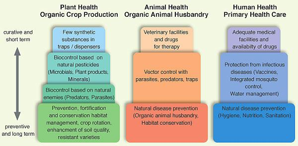
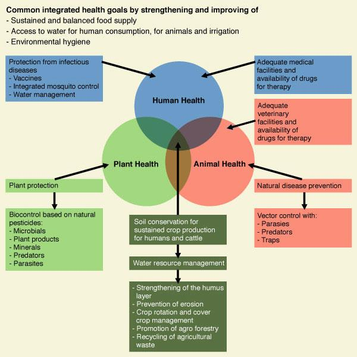
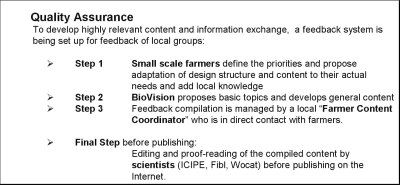

About us

Scientific Advisors
The project team works closely with scientific experts from icipe, FIBL and others. The scientific advisory board contains experts from Human-, Animal- and Environmental Health.
Specific Objectives
- Priorise, compile, tailor and disseminate user relevant content through direct contact and feedback from farmer groups and other users (i.e. according to baseline studies, usability studies, evaluations and feedback mechanisms)
- Revise and update content with local relevant information and knowledge through a network of local and international partner organisations, experts and scientists
- Increase dissemination and awareness about Infonet-Biovision as an internet-based electronic information platform and its content through different paths (i.e. through collaboration with partners/extension network/offline version/awareness campaigns)
- Integrate an active feedback system by expanding and adapting content and services according to the needs in the field, thus empowering farmers and rural communities in handling their own sustainable development activities
Main Topics and Content:
- Sustainable agriculture and organic crop husbandry for food security
- Effective ecological prevention and management of plant-, human- and animal targeting pests and diseases
- Animal health and disease prevention, organic animal husbandry and welfare
- Simple and environmentally safe technologies and approaches to improve rural livelihoods and generate income while at the same time protecting the environment and the natural resources - to preserve and sustain the quality of our air, water, food and land for current and future generation
Unique Features
- Covers a relevant range of local species, varieties and topics for East-African users (plants, health, livestock, agriculture, soil- and water management, agroecology, agroforestry, human health and hygiene, alternative income generation)
- Contains solely/exclusively information on sustainable, ecologically sound[1] and environmentally friendly methods
- Content is understandable for practitioners, with rich illustrations and applicable descriptions
- Free Internet access (no subscription) for basic information - different membership schemes for partnerships and donors will be developed
- Reviewed content, quality control and scientifically secured information is provided through a network of partner organizations as well as local and international experts
- Available as download or USB flash drive, for computers without internet access
[1] Ecologically sound means measures that promote sustainable production of food, feed and fiber. These measures will improve soil fertility over time, and pay attention to the multifunctionality of agriculture and assure the provision of ecosystem services.
How do I order the USB flash drive (Infonet-offline Version)?
The Infonet-USB is useful if you do not have internet access but have access to a computer to read the Infonet-USB.
Contact for ordering the Infonet-USB (offline version):
Farmers interested to receive the USB Flash disk need to contact Infonet through the phone number 0719 052195. It is over 1,5 GB in size and cost is around 600 ksh /6 US$
Please note that the USB Flash disk is only produced once a year and does therefore not contain the latest and updated contents, the most updated version of Infonet is only accessible through the internet.
Background
In East Africa, agriculture is the main source of income for over 70% of the rural population (in Kenya about 20 million people) and represents 25% of the region's gross domestic product (GDP). Most of the farming is small-scale or subsistence. Crop pests (insects, weeds, plant diseases, rodents etc.) represent a considerable limiting factor in the production of local food crops and are a major cause of agricultural under-production, malnutrition and poverty. At the same time the workforce is plagued by the major health problems that arise from numerous diseases caused by parasitic infections in humans (HIV/Aids, malaria) and productive livestock (tsetse-born trypanosomiasis, tick-born East Coast fever). Despite agriculture's significance, the rural population in Africa often lack access to extension services, productivity augmenting techniques and know-how. In particular, up-to-date information on affordable, effective and ecological methods for the sustainable management of plant-, human- and animal- targeting pests and disease vectors, for adequate nutrition, as well as methods to maintain a healthy and productive environment lay dormant in academic journals and research institutes, beyond the reach of farmers and rural communities that need them the most.
The idea of Infonet-Biovision
To actively support dissemination initiatives at the icipe and other organizations in the area of agriculture and health, Biovision provided the initial finances in order to begin preliminary work on an Internet platform whose purpose was to act as a tool for information sharing and dissemination of knowledge and experience gained in various pilot projects. Later the Liechtenstein Development Service provided funding to proceed the work for Phase I (2005-2007) of implementation.The design of Infonet-Biovision incorporates a bottom-up approach in the sense that the topics, content and structure of the platform was defined in consultation with local farmer groups and communities. Infonet-Biovision also encourages user's feedback on experiences and on the situation on-the-ground which eventually is lead back to the board of advisory scientists so that the information presented can be continuously adapted and expanded. This two-way flow of information is an integral aspect of ensuring the applicability, relevancy and usefulness of the platform.
Information dissemination and awareness
For effective outreach, Infonet-Biovision collaborates with Biovision Farmer Communication Outreach Programme* as well as with other training and extension networks in the field of sustainable agriculture, environment, livestock and public health. We aim to collaborate with organizations which have experience in awareness raising and sensitization for farmers and rural communities in East Africa. In addition, such collaborators ought to be receptive in in using new information and communication technologies to disseminate the necessary information to farmers and rural communities. We are aware that access to computer, literacy, language and cultural differences are major limitations in reaching the defined target groups. Therefore, we endeavor to collaborate with organizations that will translate relevant information into local languages for an effective transfer of information. We are also aware that the internet can only become an established medium for the transfer of knowledge if it is used by existing institutions and access points and if it supports their work.Infonet-Biovision has the potential to increase the impact of existing training and extension programs from GO's and NGO's as it can be easily combined with various existing local approaches. To ensure that the information reaches the end-users directly, a wide range of media such as posters, brochures, local radio, marketplace and other "low-tech" media are used.
*Biovision Farmer Communication Outreach program has 25 field extension agents who train farmers and enable them to access and use internet, print, audio, video and other electronic resources on ecologically sustainable agriculture. These field extension officers are distributed in 11 Farmer Resource Centers which are a one stop information hub for farmers. The farmer resource centres are located in Bungoma, Eldoret, Gilgil, Kagio, Kakamega, Kangundo, Kinangop, Kisii, Lengo, Machakos, Maragua, Murungaru, Shinyalu, Singi, Tiriki, Turasha and Wanginge.
Contacts of resource centres
No. |
NAME |
RESOURCE CENTRE |
COUNTY |
TELEPHONE |
|
|
1 |
Amusibwa Alfred |
Kamukuywa Farmer Resource Centre |
Bungoma |
0724 331456 |
|
|
2 |
Sarah Mahaya |
Lengo Agricultural Center |
Eldoret |
0716 419993 |
|
|
3 |
Nelly Wambui Kamau |
Gilgil, Farmer Resource Centre |
Gilgil |
0703 360100 |
|
|
4 |
Peter Murage |
Kagio Farmer Resource Centre |
Kagio |
0724 331375 |
|
|
5 |
Michael Wangalwa |
Kakamega Farmer Resource Centre |
Kakamega |
0714 803999 |
|
|
6 |
Victoria Mutinda |
Kangundo Farmer Resource Centre |
Kangundo |
0726 319422 |
|
|
7 |
Joseph Mbithi |
Makueni |
Makueni |
0720 753451 |
|
|
8 |
Everlyne Onganga |
Kisii Farmer Resource Centre |
Kisii |
0713 560449 |
mongareonganga@gmail.com everlynemo@yahoo.com
|
|
9 |
Anthony Nandunga |
Lengo Agricultural Centre |
Lengo |
0704 477234 |
|
|
10 |
John Mutisya |
Katoloni Community Based Organization |
Machakos |
0727 621162 |
|
|
11 |
Sarah Karanja |
Muranga Farmer Resource Centre |
Maragua |
0713 212454 |
|
|
12 |
Veronicah Wamiti |
Murungaru Farmer Resource Centre |
Kinangop |
0727 168770 |
|
|
13 |
Caleb Musilwa |
Muliro Farmer Conservation Group |
Shinyalu |
0722 221105 |
|
|
14 |
William Buluma |
Singi |
Singi |
0713 332568 |
|
|
15 |
Dickson S. Ambadu |
Tiriki Conservation Group |
Tiriki |
0704 184123 |
|
|
16 |
Naomi Wangari |
Turasha Resource Centre |
Turasha |
0726 674779 |
|
|
17 |
Edna Muinde |
Wangige Farmer Resource Centre |
Wangige |
0734 191155 |
|
Sustainability and Concept
The sustainability of the platform largely depends on the ability to bring the information to the farmers and to ensure the relevancy of the information provided. The project is characterized by a participatory approach involving farmer groups, local collaborating partners and communities.
Concept Design
The core concept of Infonet-Biovision is the database with its processed information and pre-defined structure which facilitates the rapid and easy incorporation of new data. As the needs of users with varying levels of knowledge and experience ought to be catered for, the platform around the database is conceived in such a way that the users can access its content through different entry points. These include databases on sustainable pest and crop management, animal, human and environment as well as training modules in these areas. Furthermore, it will be possible for the users to send feedback information to the project team-members regarding their experiences.
Contents
The platform provides comprehensible content with up-to-date information on preventive and curative control of plant-, human- and animal- targeting pests and disease vectors and on sustainable agriculture and environmental health. Where available, effective traditional management methods will also be incorporated. With the use of photos, images, illustrations and clear advice, we provide practical tools for the correct identification and recognition of pests, disease vectors and parasites and their damaging symptoms. Such information is also useful to non-experts. All information can be compiled, saved and printed in tailor-made training material by users. In all categories, external web-links lead to related web-sites with additional information.
Preventive and curative measures in Organic Farming and Human Health
|  |
|
Methods shown at the bottom have a long-term effect, while methods shown at the top have a short-term effect. In organic farming systems, methods with a long-term effect are the basis of crop production and animal husbandry and should be used with preference. On the other hand methods with a short-term effect should be used in emergencies only. In human health, preventive measures reduce peoples' dependency on medicine and drugs. They include the provision of safe water supply, sanitation, the promotion of safe food supply, proper nutrition as well as other environmental control measures. |
| (c) M. Hunziker/Biovision |
In the plant health part the database contains biological and ecological background information, scientific and local names, images and photographs used for the identification of pests and diseases. The description on the prevention and cultural measures which have long term effects is also provided. This is then followed by direct control measures such as Bio-control Agents and Bio-Insecticides which have short-term effects. The data on preventive control measures is the core part of the information we provide.In organic farming systems, methods with long-term effects are the basis of crop production and animal husbandry, and should be used with preference. On the other hand, methods with short-term effects should be used in emergencies only. Infonet-Biovision has extended this approach to human health systems. This is because the advance in the development of vaccines and chemotherapeutic agents has brought many diseases under control. However, there are still many communicable diseases for which environmental control measures are indispensable, especially in the field of water supply and sanitation. Such diseases include cholera, diarrhoeal diseases, leishmaniasis, malaria and schistosomiasis. In all these instances, the environmental measures, either as an integral part of primary health care or undertaken outside the health sector, form an indispensable component of overall disease control strategies together with education on health and hygiene. In some cases they are the only component.
|  |
| (c) Prof. Peter Luthy and Biovision |
Quality Management
Many organizations in tropical
countries, probably most of them
NGOs, are engaged in training
activities on sustainable
agriculture or related topics. The
idea which led to the development of
Infonet-Biovision was to facilitate
dissemination by making suitable
material and approaches available
over an internet platform. Already
existing material was to be
collected, screened and condensed
into comprehensive information
items, which could be made easily
accessible. In order to guarantee
the optimum implementation of the
project, various experts are
involved in the project. We have
built up a team of international and
local experts involved in the early
conceptual and content development
phases and in the monitoring and
evaluation phases. The scientific
advisors are specialised in
particular fields for the review of
all information provided on the
platform. From the contributing
partners, several were selected for
active collaboration in the
development and review of the
contents. The development of this
platform was a much bigger, longer
and more exhaustive process than
expected. The result is supposed to
be a start of a continuing process.
Infonet-Biovision shall be a living
information platform, modified and
further developed by those who use
it.
|  |
The source of information is derived from Biovision projects, research institutions, project reports, books, publications, web-sites and partner organisations in East Africa as well as from local farmers' groups and communities and extension workers' feedback.
Technical Information
Overview
Infonet Biovision is a Web application. The content is stored in a database and viewed via Browser. The following browsers are supported:
- Internet Explorer (tested from version 9.0 - 11.0)
- Mozilla Firefox from version 34-49
- Google Chrome
- Safari
- Opera
The application is compatible with Windows (tested), Macintosh and Linux.
The technology used to develop Infonet and required installations for running it are as follows:-
Operating System
The Operating system is Debian Linux Version 7.7.
Web Server
Resides on an Operating system installed on a virtual private server(VPS).
Programming language/Client
The client is implemented in HTML5 and Javascript.
Database Management System (DBMS)
A relational database is used at the backend. At the moment we have Mysql version 5.5.4 implemented. Mysql runs on different platforms including Windows, MacOSX and different Unix-Versions. It should be possible to use other relational databases with acceptable change effort.
Content Management (creation/authoring, editing and publishing)
Content management for the Infonet is via a content management system (CMS).
The content management system is Drupal v. 7.38
Copyright and Content Licensing of www.infonet-biovison.org website
Text, illustrations and photos,
elaborated within the
Infonet-Biovision framework (marked
with (c)Biovision or (c)icipe below
the text or image) are provided
freely to Infonet users under the
condition that the source and author
is provided and only for
non-commercial uses. It is published
under Creative Commons
Attribution - Noncommercial -
Share Alike license.
 |
If you alter, transform, or build upon this work, you may distribute the resulting work only under the same or similar license to this one. For any reuse or distribution, you must make clear to others the license terms of this work. The best way to do this is with a link to this web page.
Exceptions from Creative Commons:
- Exceptions include trademarks, logos and other identifying marks. Trademarks, logos and other identifying remarks may not be reused or redistributed with prior written consent from Infonet-Biovision.
- Publications, images and graphics that are provided by third-party publishers and partner organizations (marked with (c)Author other than Biovision or icipe below the text or image) are not available under Creative Commons.
- In some cases, third-party content will contain the 'All Rights Reserved' copyright notice. Any content so designated is explicitly excepted from Creative Commons, you must contact the copyright holder before using the content/photograph. But users should check with Infonet-Biovision before redistributing third-party content found on a Infonet-Biovision site.
- Other parts of the site may also include third party content that is licensed on different terms. Where that use is not a fair use, the different license terms of that content are either indicated or the content is acknowledged to be 'Used with permission'.
Disclaimer
Biovision Foundation is attempting to offer information of sound quality to the users of the online platform and information service, Infonet-Biovision. Due to the fact that ecological approaches cannot be standardized because of the diversity of local factors influencing its performance, Biovision does not assume any responsibility for damages which may arise from the use of the information presented in Infonet-Biovision. This covers any direct, indirect or consequential damages.Biovision Foundation encourages the users to test the information presented first on a small scale within their location with the aim to study the performance of the presented information under local condition and to adapt it, if necessary. This local validation should be conducted in cooperation with competent local partners.Note: Hyperlinks to other Internet sites do not imply any official endorsement of or responsibility for the opinions, ideas, data or products presented at these locations, or guarantee the validity of the information provided. The sole purpose of links to other sites is to indicate further information available on related topics.
Applicable Law
This site is founded and hosted by Biovision Foundation in the canton of Zurich, Switzerland. This site, its contents, and any disputes arising therefrom shall be construed and interpreted exclusively under the laws of the canton of Zurich and applicable Swiss federal laws.
Last updated on:
| Unless otherwise stated, all content on the Infonet Biovision is licensed under a Creative Commons License | Disclaimer |